24 October2026 · Tent and bedding silhouette refinement
Three new source models replace rigid fabric with tension sag, restrained folds and supported sewn lines. The dome has a real continuous arched doorway. Eight tents and seven rolled bags receive the geometry in the current native scene. Ground, fitted tent floors, frames and anchors retain their authored coordinates; the west bag has one recorded clearance correction.
The west rolled bag was moved22cm inward on the same fitted floor to clear the sloping canopy. Tent-floor, frame and anchor placements are retained.
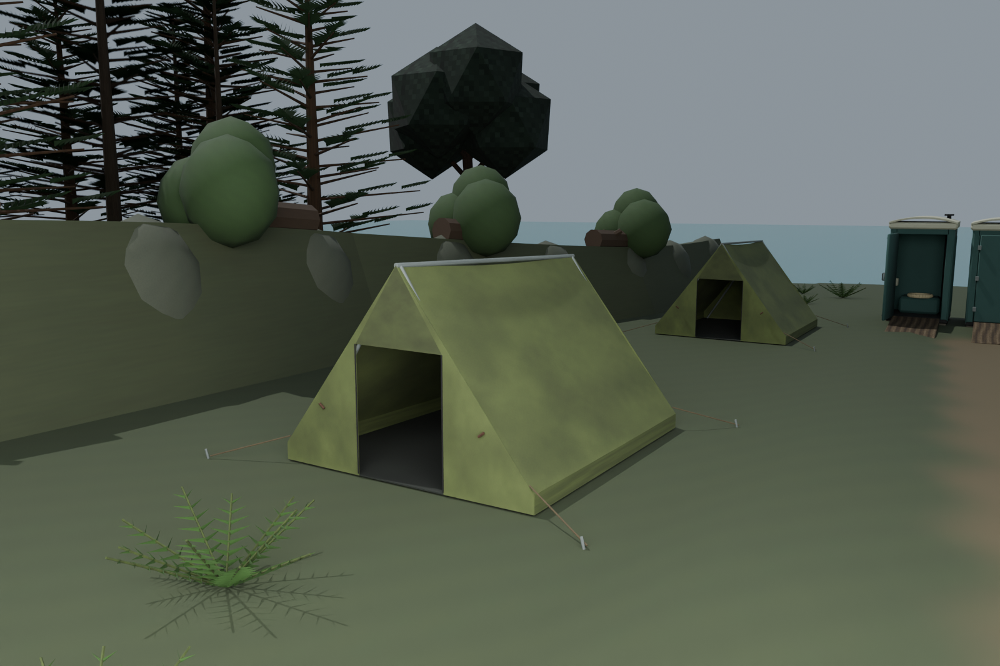
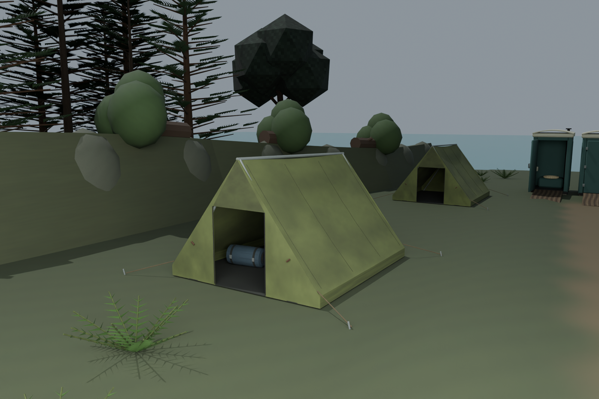
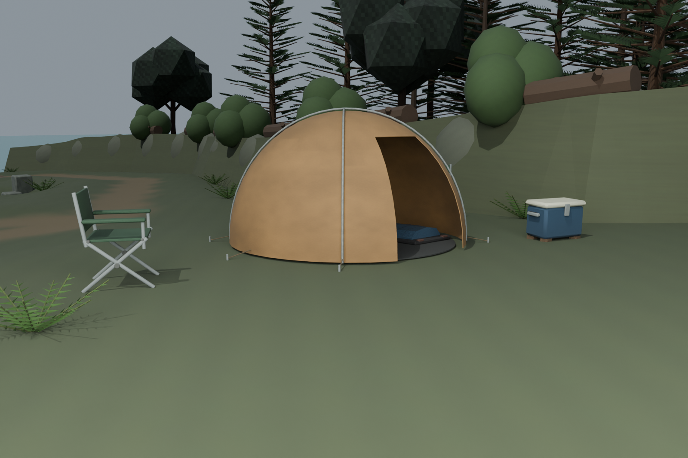
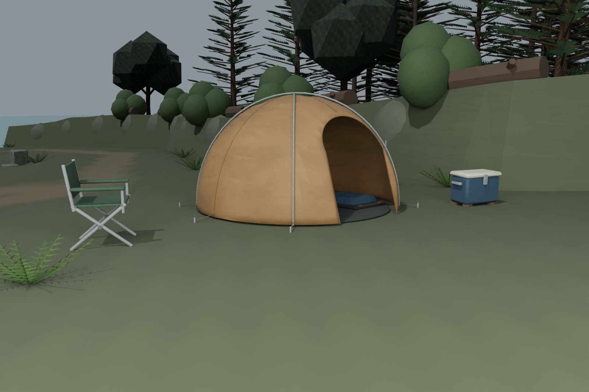
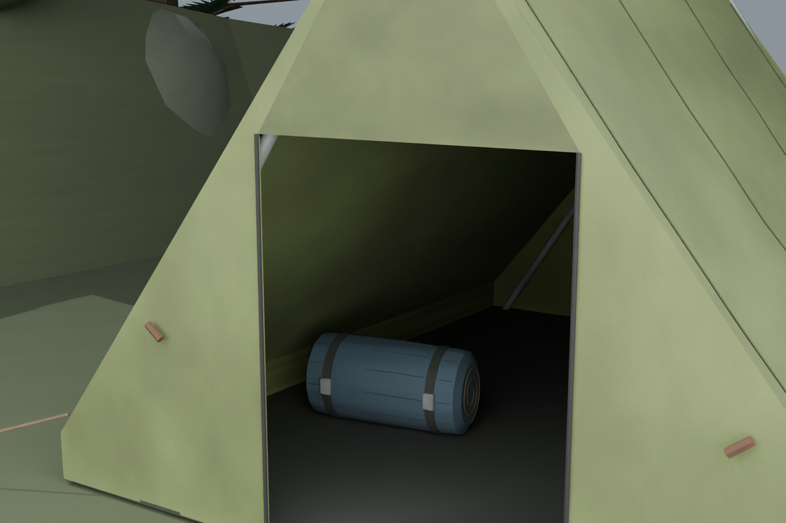
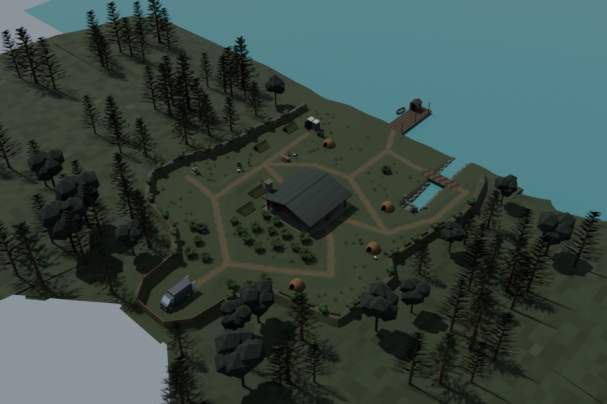
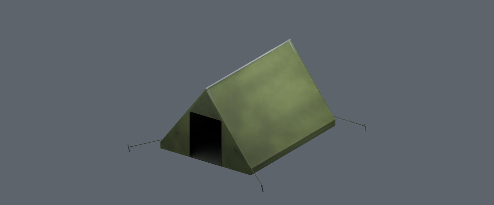
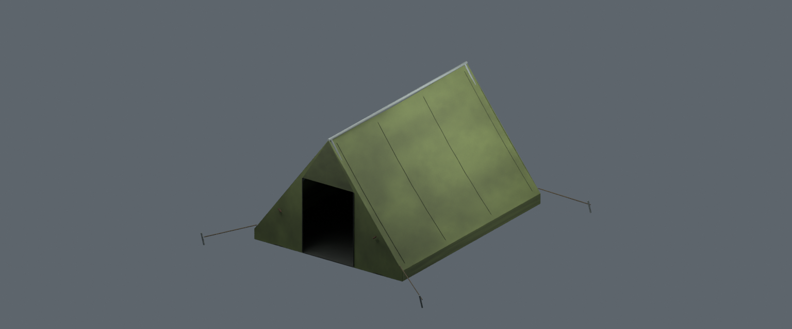
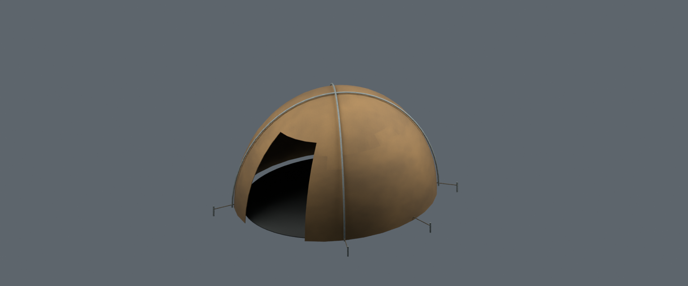
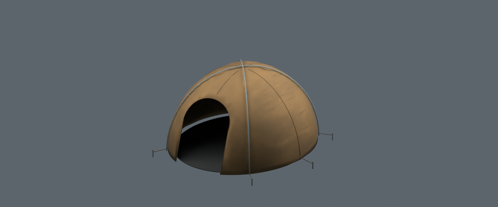
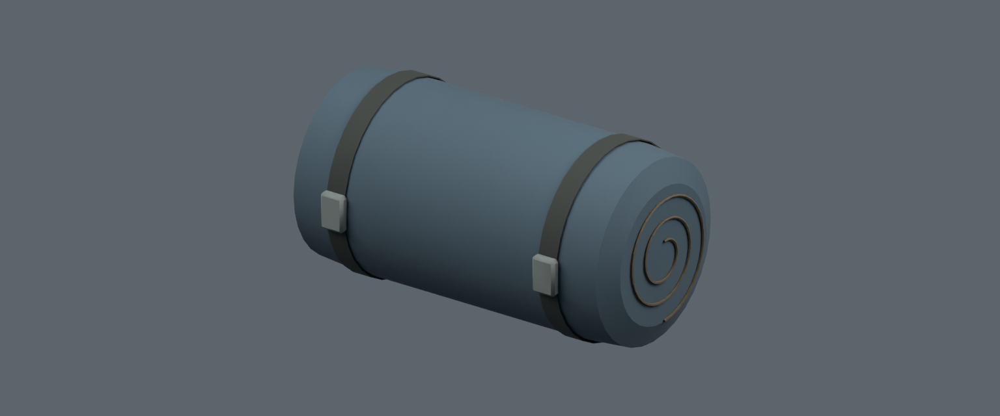
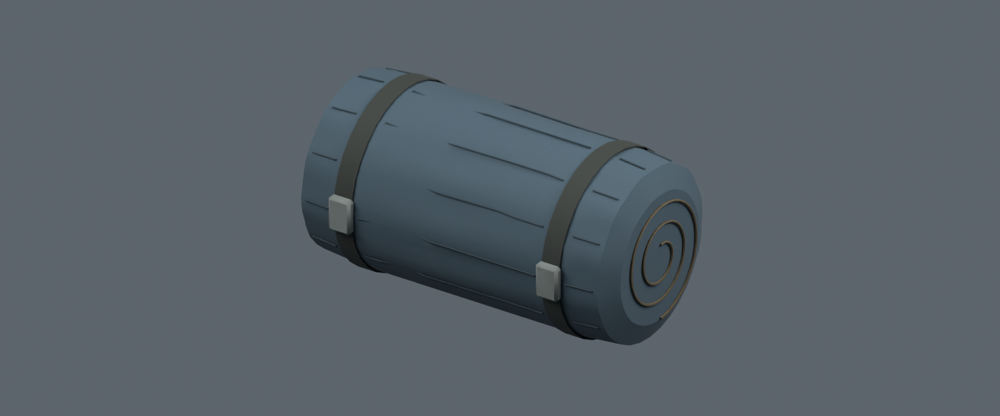
Closed actual cloth shells;3190 seam-support probes;32 shell thickness rays (nominal8mm). All232864 fitted floor vertices on8 tents retain exact world positions, and788 other scene meshes retain geometry/placement.72 positive native roof/floor rays prevent missing or buried canopies from passing on clearance alone.
All7 rolled bags also pass40936 actual canopy-clearance vertex rays (minimum clearance0.202m) and21 actual floor-contact rays. The corrected bedding close-up looks through the entrance.
Native fit:10377 protected-route samples,363 ritual samples,72 floor contacts,1640 crouch-entry probes,18 bedding contacts,126 foundation/ramp samples,1250 barrier rays and9 culvert terrain rays pass. Three GLBs reimport under unchanged50k/4MB caps (23444 triangles combined); the actual game reader passes1080 independent per-material UV/PNG pixel checks. The prior14 authored model families and8 legacy equipment meshes retain their passing loader checks.
These images are native/studio captures, not gameplay screenshots. Runtime map/collision/render/circuits/AI/LAN, layered water, hiding activation, human/LOD/performance and final story/loose-physics/Easter-egg gates remain open. Firewood silhouettes, foliage/boundary models and remaining gear still need refinement. The existing vehicle color-count assertion remains separately open as DEV-060.
Current native scene · Sources/instances · Independent physical checks · Native fit checks · Previous surface review · Shared gallery